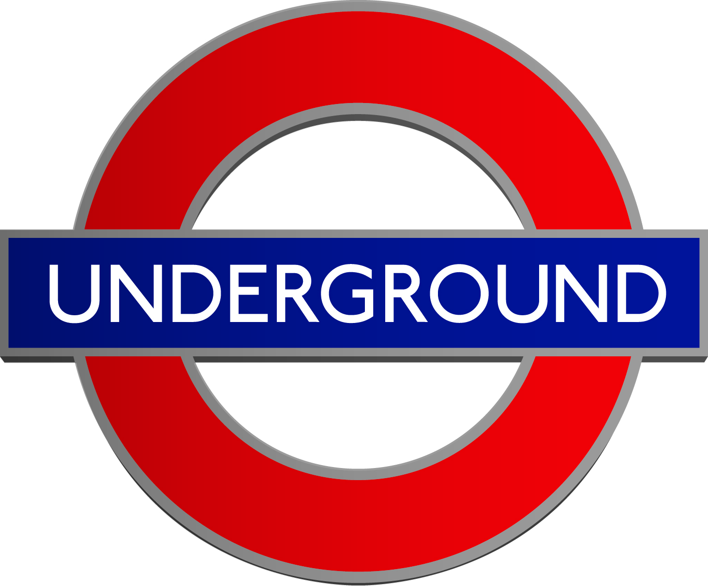
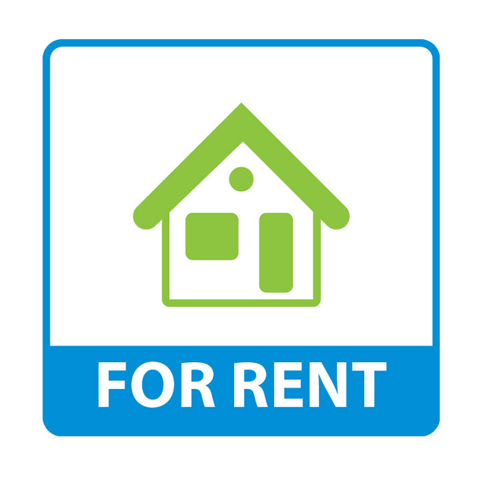

Transportation
How much time will I have to spent from this place to my job If I choose to live here? Will I have to take several transfers?

Rental prices
Which neighbourhoods are the most expensive? and the cheapest? What neighbourhoods are left if I do not want to pay more than, for
example, 800 euros.
Night Life
Do you want to live in a quiet and restful place? Or maybe you prefer a street where life explodes in nights of extasy and color?